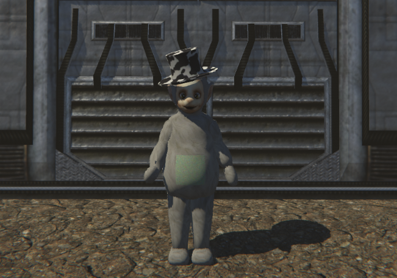

Slendytubbies III
THE APOCALYPSE DLC

SOBRE MI
Soy Santyminii, youtuber y desarrollador del proyecto "Slendytubbies III The Apocalypse DLC" hecho por mi, llevo avances en mi servidor de Discord y desarrollo mis proyectos en Unity.
Cada semana el juego avanza, ya que sigo la historia en base a filtraciones y como llegaria a ser el juego original, de momento solo tengo el capitulo prologo que se lanzara en algunos meses; ideas y aportes de la comunidad son tomados en cuenta y tengo apoyo de un youtuber popular que podra hacer posible esto.
si quieres saber mas cosas, unete al Discord, es gratis y hablo constantemente en el, ademas aqui estara el enlace al juego :D